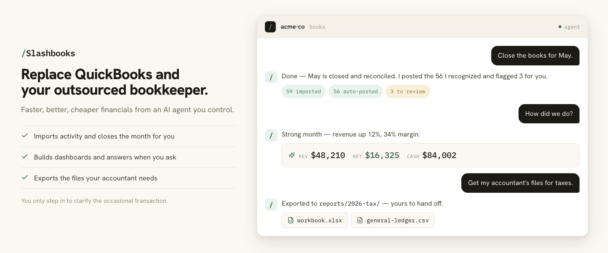

Open source. Local first. Built for simple business books.
Keep your books current without living in QuickBooks.
Slashbooks gives your AI agent a reliable bookkeeping workflow. It imports activity, prepares the close, explains the numbers, and creates the files your accountant needs.
Free and open source (Apache-2.0). Try it on a demo company before you connect real accounts.

Slashbooks is an open-source, local-first AI bookkeeping agent for cash-basis, owner-operated businesses. It runs as a /books plugin in Claude Cowork, Claude Code, and Codex.
It does the tedious work: set up the books, pull in bank and card activity, categorize the repeat transactions, close the month, answer your questions, and export the files your accountant needs. You only step in to clarify the occasional transaction.
I was tired of paying for QuickBooks and an outsourced bookkeeper for books that were always behind, so I built a bookkeeper my AI agent runs and that I control.
Is it for you?
A good fit if…
- You run an owner-operated, cash-basis business.
- Bank and card activity drive your books.
- You want current books without living inside accounting software.
- You want the books in local files you own, not a vendor cloud.
- Your accountant reviews the output before tax filing.
Not a fit (yet) if…
- You need payroll or inventory accounting.
- You need full accrual accounting.
- You need multi-user accounting controls.
- You want software to replace your accountant. Slashbooks prepares the books; a professional still reviews them.
Slashbooks is beta software. It is not tax, legal, accounting, payroll, inventory, or investment advice, and it does not replace professional review.
How it works
01
Bring in activity
Connect bank and card feeds, Stripe, Mercury, or import CSV files.
02
Review the exceptions
Trusted patterns move through. Unfamiliar transactions wait for your decision.
03
Close and hand off
Get current reports and Excel or CSV exports for your accountant.
Why it feels different
Your books stay with you
Each company lives in a folder you choose, with the ledger, review queue, audit log, and reports together.
The AI is the interface, not the accountant
Deterministic software imports, validates, and reports the numbers. The agent guides the workflow and explains the result.
Built to work with professional review
Slashbooks prepares structured books and exports. Your accountant or tax professional still provides professional judgment.
Why not just QuickBooks?
QuickBooks serves every kind of business at once: invoicing, payroll add-ons, inventory, accrual, multi-user roles. If yours is a simple cash-basis business, you pay for that breadth in subscription fees, clutter, and clicks. Slashbooks is deliberately narrow instead.
| Aspect |
QuickBooks |
Slashbooks |
| Where your books live |
Intuit's cloud, reached through their app. |
Local files in a folder you choose and back up yourself. |
| How you work |
Click through menus, forms, and reports. |
Ask an AI agent in plain English; it runs the workflow. |
| Scope |
Broad platform for every kind of business. |
Narrow on purpose: cash-basis books for owner-operators. |
| Cost |
Monthly subscription. |
Free, Apache-2.0. Runs inside the Claude or Codex plan you already use. |
What you can do
- Start books for a company in an empty directory.
- Keep the ledger in a local SQLite store you own, with Beancount-style exports when you need plain text.
- Connect Stripe, Mercury, and bank feeds, or have your agent build a connector for anything else.
- Schedule the monthly close to run on its own, with current books waiting.
- Review unfamiliar transactions before they become trusted rules.
- Ask for an analysis of anything, anytime, with every figure at hand.
- Get any report, chart, or export on demand, without clicking around an app.
- Backtest against QuickBooks exports before trusting a migration.
- Export the workbook and CSV files your accountant needs at tax time.
Local-first by design
Your books stay yours. Each company directory holds its own ledger.sqlite, review queue, audit log, and generated reports. The plugin does not host your books.
The agent is the interface — it asks questions, explains differences, and helps you work through the close. The numbers come from deterministic software, not the AI. The software imports transactions, writes ledger entries, validates balances, and generates reports. The AI never invents totals or does the math itself.
Common questions
Can I trust an AI with my books?
The AI never does the math. A deterministic accounting engine imports transactions, writes ledger entries, validates balances, and generates reports. The agent guides the workflow and explains the results. Unfamiliar transactions wait in a review queue for your decision, and an audit log records every change to the ledger.
What does it cost?
Slashbooks is free and open source under the Apache-2.0 license. There is no subscription and no hosted service. It runs as a plugin inside Claude Cowork, Claude Code, or Codex, so your cost is the AI tool you already use.
Is my financial data private?
The durable accounting system is local files on your machine — the plugin does not host your books. That said, Slashbooks is not an absolute privacy guarantee: the AI agent and the connectors you enable see the data they need to do the work. You choose which connections to make.
Will my accountant work with this?
Slashbooks is built around the accountant handoff, not against it. It exports the Excel workbook and CSV files accountants normally ask for, and there is a guide written for accountants that explains how the books are kept.
I already use QuickBooks. How do I switch?
Import your QuickBooks exports and backtest first: run Slashbooks over past months and compare its results with your QuickBooks history before you rely on it. The comparison page covers the differences in detail.
What if I stop using it?
You keep everything. The books are ordinary local files — a SQLite ledger, plain-text exports, Excel and CSV reports. There is no account to cancel and no vendor to ask for your data.
Do I need to be technical?
No terminal is required. Claude Cowork gives you a guided workspace for setup, review, and the monthly close. If you already use Claude Code or Codex, the install is two commands. Either way, you talk to the agent in plain English.
Try the demo company
Want to explore before connecting real data? Open your books parent folder in Claude Cowork, Claude Code, or Codex and say:
Let's setup the books for the demo company.
The agent shows onboarding questions with Northstar Metrics LLC's fictional answers and creates sample business activity plus a few transactions to review, so you can try the normal workflow without connecting real accounts.
Install
Pick the app you prefer. Install the plugin once, then use it from a separate books parent such as ~/Documents/books/, with one subfolder per company.
Claude Cowork
Best for most people. Cowork gives you a guided workspace for setup, review, and monthly bookkeeping without living in a terminal.
- Open Claude and go to Cowork.
- Open Customize → Plugins.
- Under Personal plugins, click + → Add marketplace.
- Paste
https://github.com/giltotherescue/slashbooks and click Sync.
- Install or enable
/books from the synced marketplace.
Claude Code
/plugin marketplace add https://github.com/giltotherescue/slashbooks
/plugin install slashbooks@slashbooks
Codex
codex plugin marketplace add https://github.com/giltotherescue/slashbooks
Then restart Codex if needed, open the plugin directory, choose the Slashbooks marketplace, and install the plugin.
Own your books again
Install the plugin, start with the demo company, and see a month close itself. The source is open if you want to read it first.
Documentation
License
Apache-2.0. See the LICENSE on GitHub.